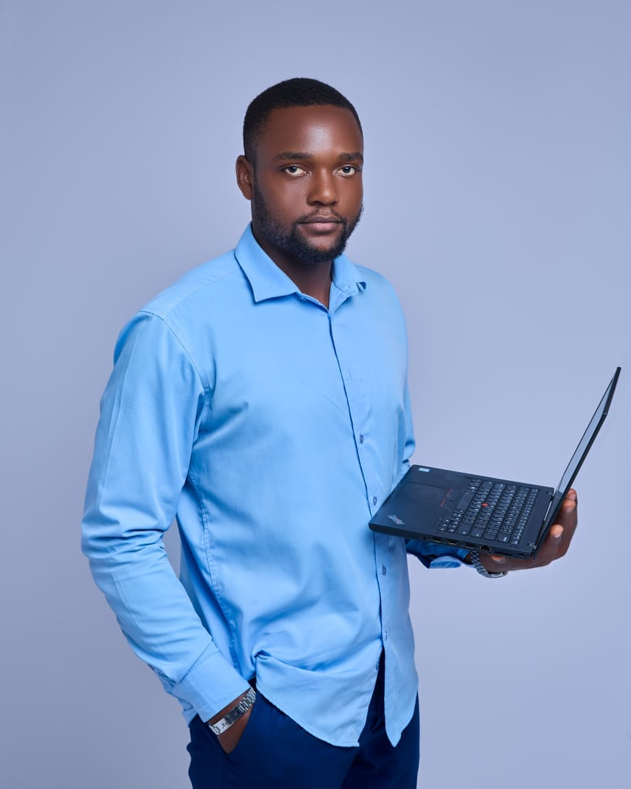

Cybersecurity, St. Clair College
Post-Graduate Diploma · Windsor, Ontario
WINDSOR, ONTARIO / OPEN TO OPPORTUNITIES
Aubin Tseyep
INFRASTRUCTURE & SYSTEMS ENGINEER · CYBERSECURITY STUDENT
I connect systems experience, data protection and privacy research to help organizations build resilience.
Build. Protect. Recover.VMware · Veeam · Quantum · Linux · Fortinet

IT infrastructure.
↗Data protection.
↗Cybersecurity.
Virtualization, data protection and incident troubleshooting: hands-on experience that informs my approach to cybersecurity.
My academic work explores the connections between cybersecurity, privacy and organizational responsibility. I aim to understand risks, investigate their causes and develop realistic responses.
Coursework & research interests · St. Clair College
Describe the issues. Analyze the causes. Connect recommendations to evidence.
MY RESEARCH APPROACHA few moments from my professional journey at SETECT, in photos and video.
A video excerpt from my professional journey.
Cybersecurity is helping me ask better questions.
My background in network and security led me to work with virtual infrastructure, backup platforms, storage and business continuity. I’m now continuing my cybersecurity studies at St. Clair College in Windsor.
I’m interested in connecting technical decisions with their effects on organizations and people: the availability of a service, the protection of data or the trust placed in technology.
Connect with me on LinkedIn ↗Post-Graduate Diploma · Windsor, Ontario
Virtualization, backup, storage and incident recovery · Douala, Cameroon
Electronic document management with Maarch Courrier · Douala, Cameroon
Douala, Cameroon
At St. Clair College, I help bring students together to exchange ideas and learn. Volunteering at Operation Defend the North also connects my studies with industry perspectives and practical cybersecurity challenges.
VEEAM
ORACLE
FORTINET
QUANTUM
An infrastructure or cybersecurity opportunity, a conversation about privacy, or a student collaboration—I’d be glad to connect.